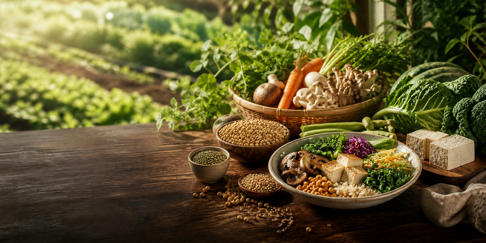

지속가능식품
Sustainable Food
내 몸에도 지구 환경에도 좋은
Sustainable food
이웃사랑, 생명존중의 정신에서 시작한 풀무원의 바른먹거리는
내 몸에도 지구환경에도 좋은 지속가능한 바른먹거리, '지속가능식품'으로 진화합니다.
지속가능식품 속성과 체계
지속가능식품은 사람과 지구에 건강한 순환을 돕는 지속가능한 원료와 공정으로 만듭니다. 식물성 원료 사용을 확대하며 동물성 원료의 경우 생명의 존엄성이 보장된 환경에서 생산된 원료를 우선으로 사용합니다. 풀무원 영양관리기준에 따라 영양균형식을 제공하고 환경친화적인 제조, 포장, 유통이 되도록 노력합니다. 지속가능식품은 이러한 속성을 담아 식물성지향 식품(Plant-Forward Foods)과 동물복지 식품(Animal Welfare Foods)을 제공합니다.
Sustainable Foods
(지속가능 식품)
Plant-Forward Foods
(식물성 지향 식품)
동물성 원료 사용을 줄이고
식물성 원료 사용을 지향한 식품
Plant-Based Foods
(순식물성 식품)
식물성 원료로만 구성한 식품이자 동물성 원료를 식물성으로 완전히 대체한 100% 식물성 식품입니다. 콩, 두부, 곡물, 채소, 과일 등 식물성 원료와 동물성 원료를 식물성으로 대체한 비건 컨셉을 구현합니다. 고도화된 기술을 통해 단백질을 높이고, 탄수화물을 줄이는 등 영양적 가치를 강조합니다.
Plant-Forward Fresh RM
(식물성지향 신선간편조리식)
식물성을 지향하고 일부 동물성 원료가 포함된 신선간편조리식입니다. 순식물성 식품에 고기 조각이 없는 동물성 소스, 육수만 제한된 양만큼 사용합니다. 사용되는 동물성 원료는 동물복지 인증 원료로 단계적으로 전환합니다.
Animal Welfare Foods
(동물복지 식품)
지속가능 속성의 동물성
원료를 강조한 식품
Animal Welfare Foods
(동물복지 식품)
육류, 가공, 달걀을 주원료로 사용한 식품으로 동물복지 인증 원료를 사용합니다. 탄소배출량이 큰 동물성 원료 사용은 지금보다는 줄이려고 노력합니다. 동물복지 인증 원료·1차 가공품 그리고 신선간편조리식으로 구현합니다.
Sustainable Seafoods
(지속가능 수산물 식품)
어류, 해조를 원료로 주원료로 사용한 식품으로 ASC/MSC 인증 원료를 사용합니다. ASC/MSC 인증 원료·1차 가공품 그리고 신선간편조리식으로 구현합니다.
지속가능식품의 지향점
지속가능의 의미를 담은 인증 원료와 공정 기술을 지향하기에 "풀무원 지속가능식품은 내몸에도 지구환경에도 좋습니다"
식물성 원료 사용 확대
식물성 원료 사용을 늘리고 시장의 변화를 이끌어온 바른먹거리(Plant-healthy,plant-forward food)로 지속 가능한 식문화를 확대합니다.
식품의 영양안전
국내, 유기농인증을 넘어 선 지구환경에도 더 나아간 지구환경까지 지속 가능한 바른 원료를 사용합니다.
사용 확대 지속가능성
인증 원료 사용 식품의
영양안전 환경친화적
공정 기술
지속가능성 인증 원료 사용
축산 고기 대비 지속가능식품(plant-forward food, on-farm, off-farm)이 인체와 지구환경에 미치는 선한 영향력과 사회적 책임을 다하고 있습니다.
환경친화적 공정 기술
사회, 환경에 부정적인 원료를 피하고 미래 사회가 요구하는 친환경적 지구환경에도 도움이 되는 좋은 원료로 미래를 만들어 갑니다.